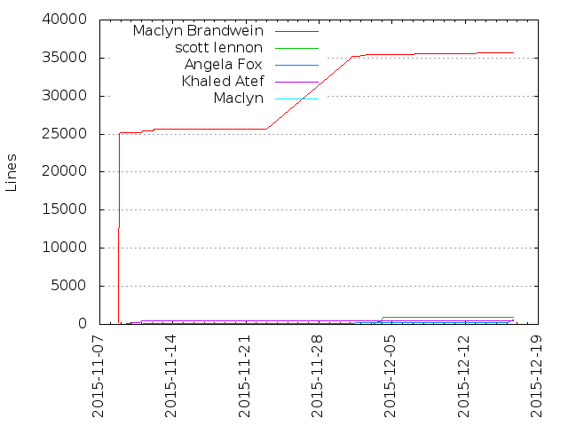
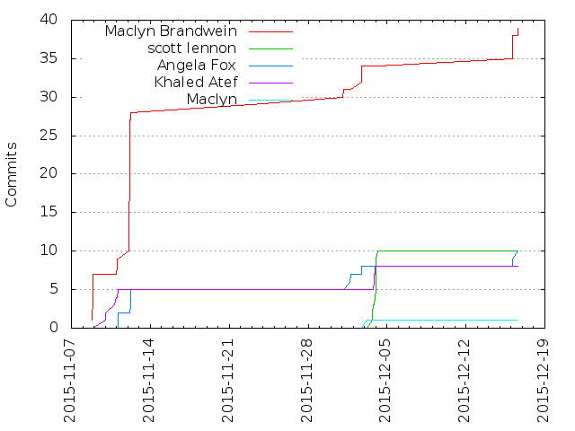

Authors
| Author | Commits (%) | + lines | - lines | First commit | Last commit | Age | Active days | # by commits |
|---|
| Maclyn Brandwein | 34 (72.34%) | 35483 | 24433 | 2015-11-08 | 2015-12-02 | 23 days, 23:14:36 | 7 | 1 |
| Angela Fox | 8 (17.02%) | 263 | 21 | 2015-11-10 | 2015-12-02 | 21 days, 14:49:06 | 4 | 2 |
| Khaled Atef | 5 (10.64%) | 471 | 195 | 2015-11-09 | 2015-11-10 | 1 day, 3:07:58 | 2 | 3 |


| Month | Author | Commits (%) | Next top 5 | Number of authors |
|---|
| 2015-12 | Maclyn Brandwein | 3 (50.00% of 6) | Angela Fox | 2 |
| 2015-11 | Maclyn Brandwein | 31 (75.61% of 41) | Khaled Atef, Angela Fox | 3 |
| Year | Author | Commits (%) | Next top 5 | Number of authors |
|---|
| 2015 | Maclyn Brandwein | 34 (72.34% of 47) | Angela Fox, Khaled Atef | 3 |
| Domains | Total (%) |
|---|
| maclyn.me | 34 (72.34%) |
|---|
| gmail.com | 8 (17.02%) |
|---|
| columbia.edu | 5 (10.64%) |
|---|